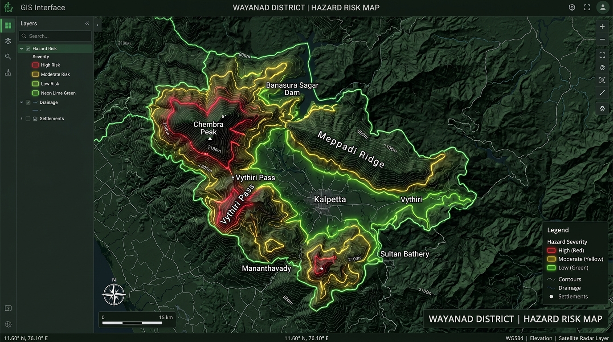

Geographic Risk Mapping
Interactive spatial exploration of critical slopes with high-resolution topographic data layers and monitored regional boundaries.
Spatial Zones
Terrain Models
Western Ghats
The all-in-one platform for disaster management teams who want clarity, speed, and AI-assisted landslide risk intelligence.
Explore how SlopeGuard organizes environmental indicators and spatial insights into practical decision-support tools.
Interactive spatial exploration of critical slopes with high-resolution topographic data layers and monitored regional boundaries.
Continuous monitoring of precipitation accumulation, saturation indexes, and soil moisture levels across field stations.
Tiered hazard notifications allowing authorities and local responders to initiate timely disaster preparedness protocols.
Multi-variable hazard calculations identifying the strongest contributing causes of slope instability and displacement.
Explore active slope failure susceptibility, precipitation thresholds, and high-risk corridors across monitored regional sectors.

A three-step analytical pipeline designed to collect environmental indicators, evaluate slope stability, and share early warnings.
Ingest real-time precipitation records, satellite radar observations, and digital elevation models from regional monitoring stations.
Evaluate multi-parameter stability factors using verified geological models and historical slope failure thresholds.
Deliver actionable severity alerts, risk heatmaps, and spatial guidance to emergency coordinators and vulnerable communities.
Purpose-built components and verified data infrastructure powering SlopeGuard's real-time risk intelligence.
Client-side geospatial visualization engine providing interactive polygon vector rendering, sector zone boundary overlays, and dynamic hazard risk shading.
High-resolution cartographic topography and terrain basemaps configured for resilient offline-capable caching and rapid field responsiveness.
Enterprise Java telemetry ingestion engine running real-time RESTful APIs, spatial querying pipelines, and JWT session authorization guards.
Automated integration with weather stations, cumulative rainfall threshold telemetry, and soil moisture saturation matrixes.
SlopeGuard is engineered to assist communities and disaster management teams in identifying landslide susceptibility across vulnerable mountainous regions.
By combining rainfall telemetry, steep slope dynamics, terrain geology, Synthetic Aperture Radar (SAR) observations, and verified environmental datasets, the platform evaluates multi-factor risk indicators to support timely hazard mitigation.
Monitors cumulative precipitation against historical slope failure limits.
Evaluates slope steepness, curvature, and digital elevation models.
Analyzes satellite observations to track moisture and surface shifts.
Incorporates verified field notices regarding ground fissures and shifts.
Discover how SlopeGuard's terrain intelligence and early warning architecture can assist your regional disaster risk reduction operations.